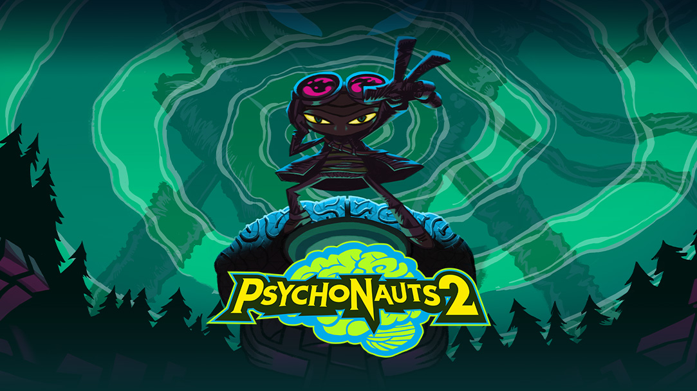

Psychonauts 2

O game conta a história de Razputin Aquato, um garoto que foge do circo para participar de um acampamento de verão para pessoas com poderes psíquicos. Toda a trama se baseia em entrar na mente dos personagens e ajudá-los a resolver seus problemas mais profundos.
Fonte: canaltech.comConcorreu ao goty 2021
Onde comprar?